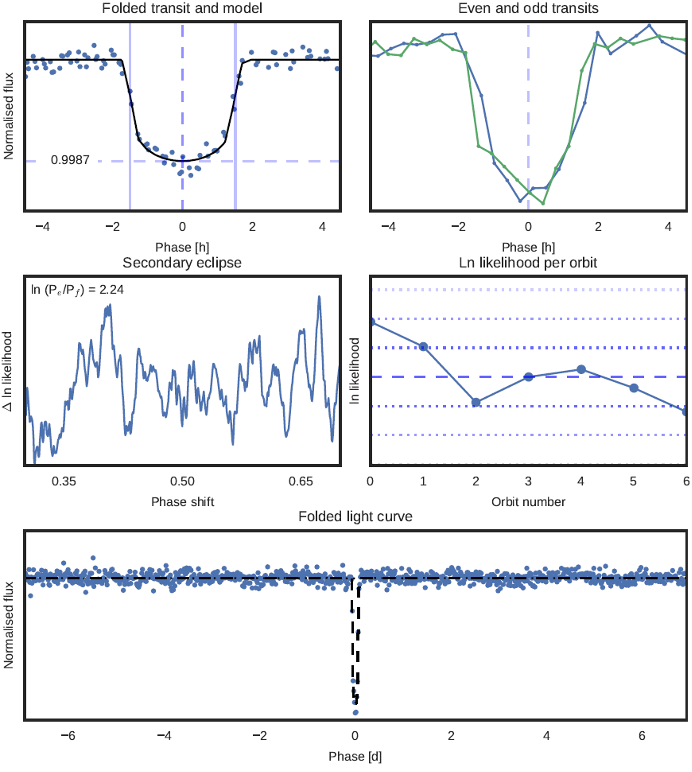

Radio revelations:
Discovering our galaxy’s hidden planets
Benjamin Pope, UQ
benjaminpope.github.io/talks/brisscience/brisscience
Planets
More planets are being discovered all the time!

Like Moore's Law, Mamajek's Law:
Number of known exoplanets double every 27 months

Radial Velocity
The first exoplanet: 51 Pegasi b, Mayor & Queloz (1995)

Nobel Prize in 2019: Mayor & Queloz for 51 Peg b discovery

Direct Imaging
Transits
Exoplanet-style transit light curve of Venus from James Gilbert on Vimeo.
My first planet, using Kepler: EPIC 212521166 b!
JWST
The newly launched James Webb Space Telescope hopes to search atmospheres of nearby planets for signs of habitability
Red Dwarfs


Radio Astronomy!
Total planets:?
Theorists now say that expanded ionospheres of hot Jupiters might self-absorb this emission down to undetectable levels.
LOFAR
GJ 1151

... but GJ 1151 is inactive and this emission is steady during the epoch it is detected.

RV Followup (Pope+ 2020, Mahadevan+ 2021)
The Whole Sample
Güdel-Benz Diagram

Active stars
Quiescent stars
The Future
With the SKA - hundreds!